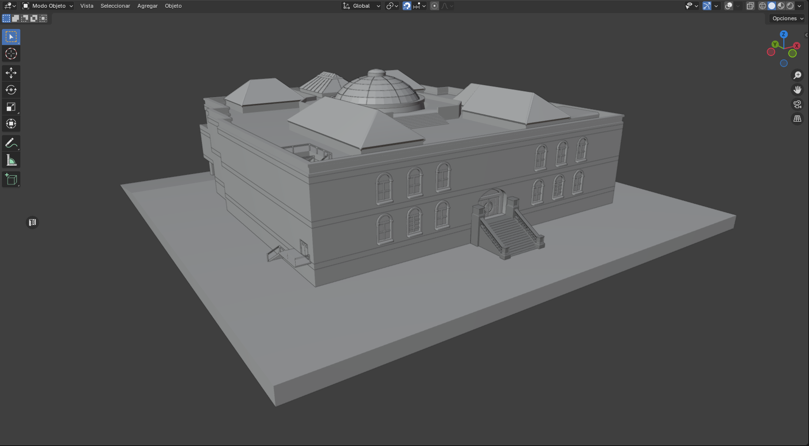
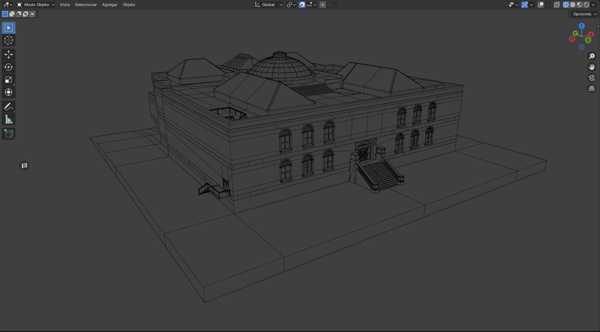
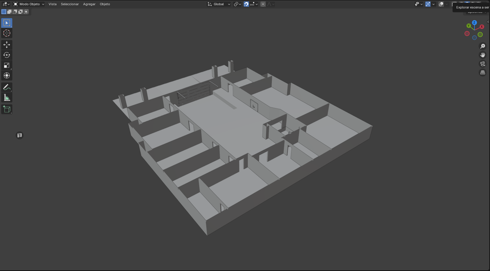
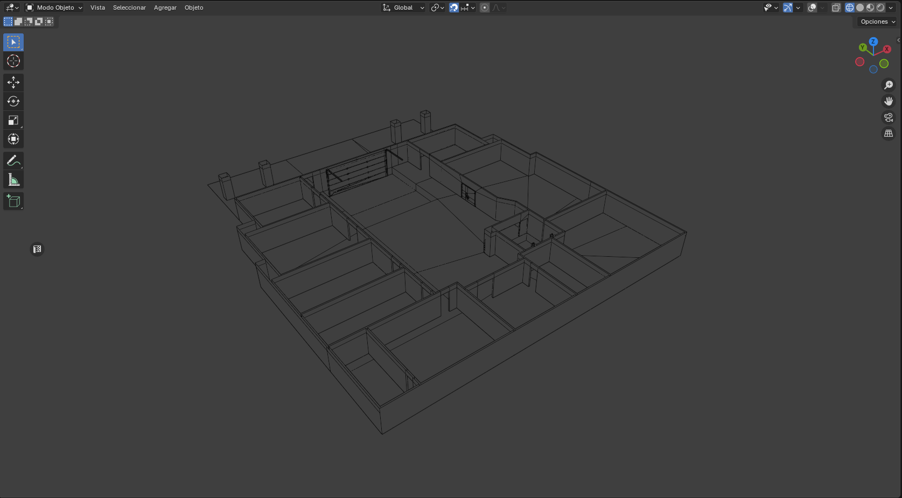
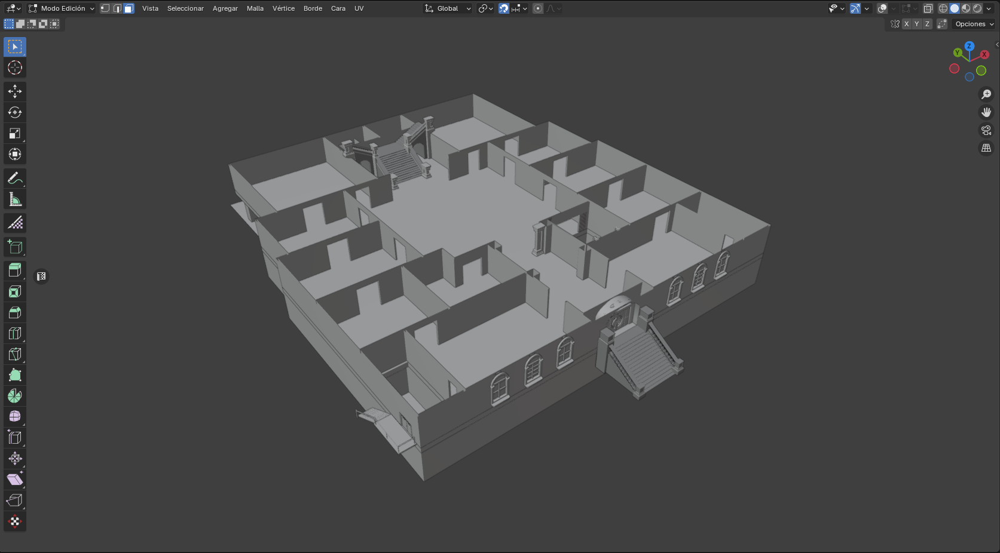
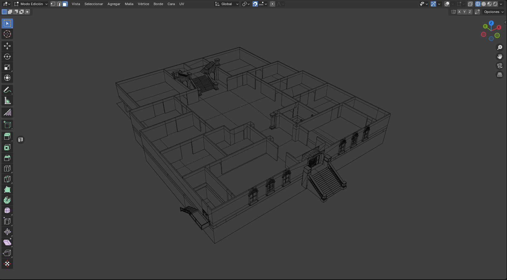
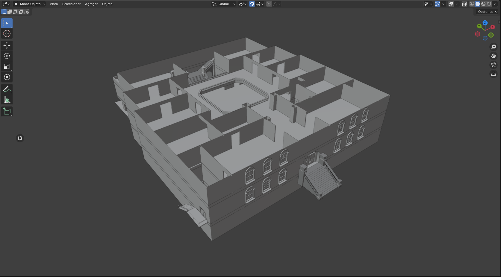
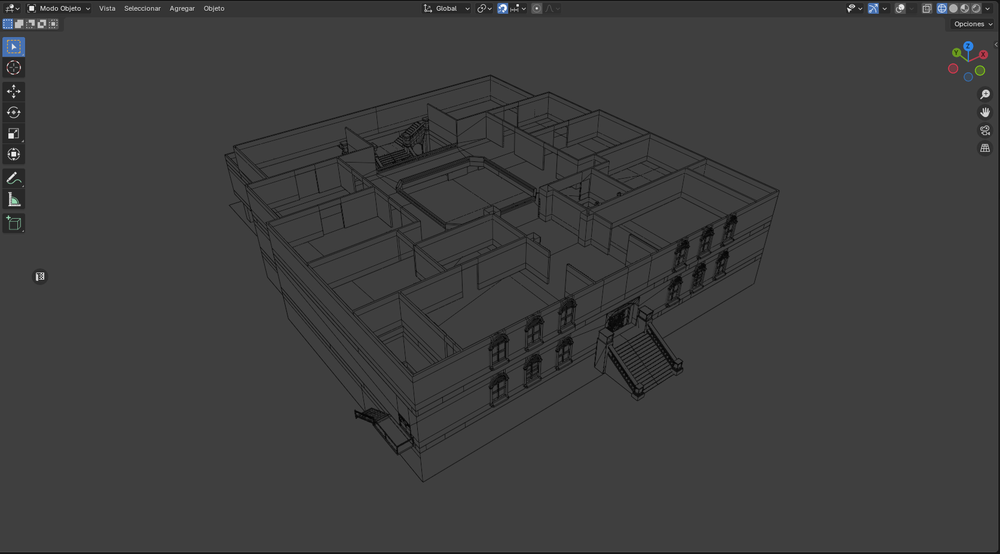
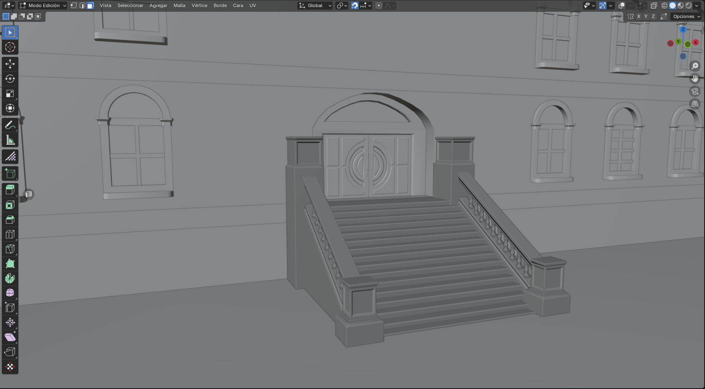
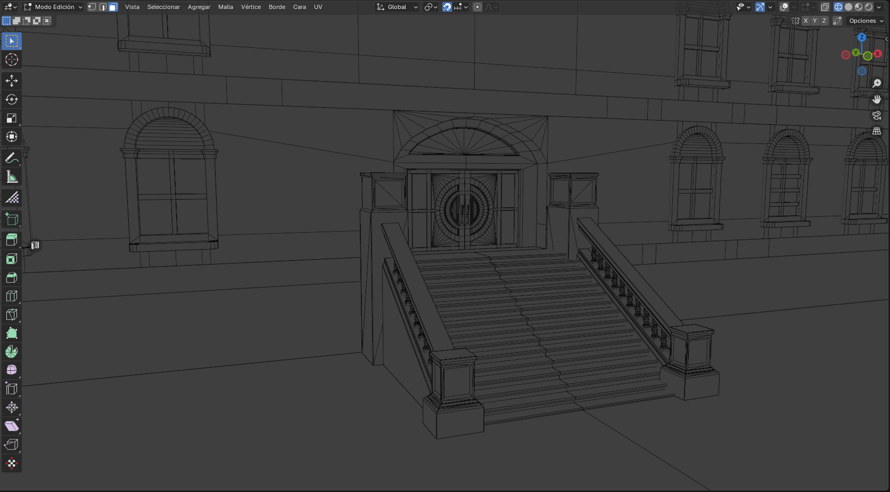
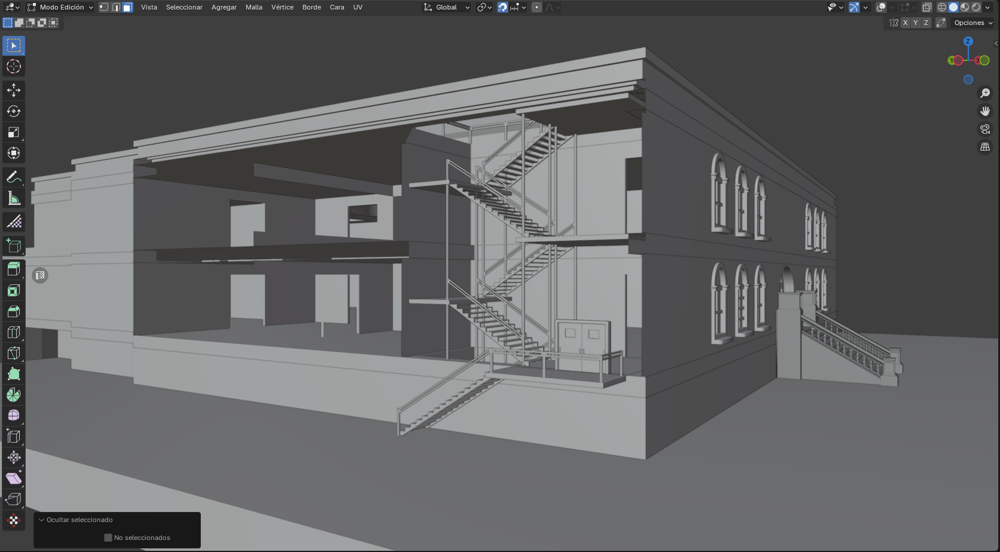
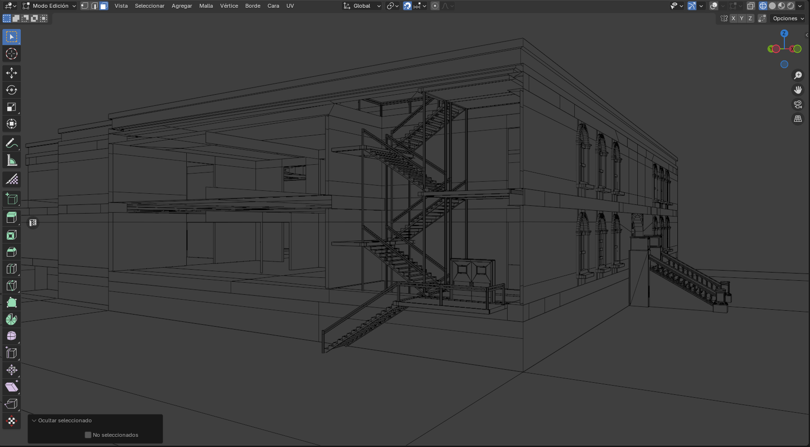
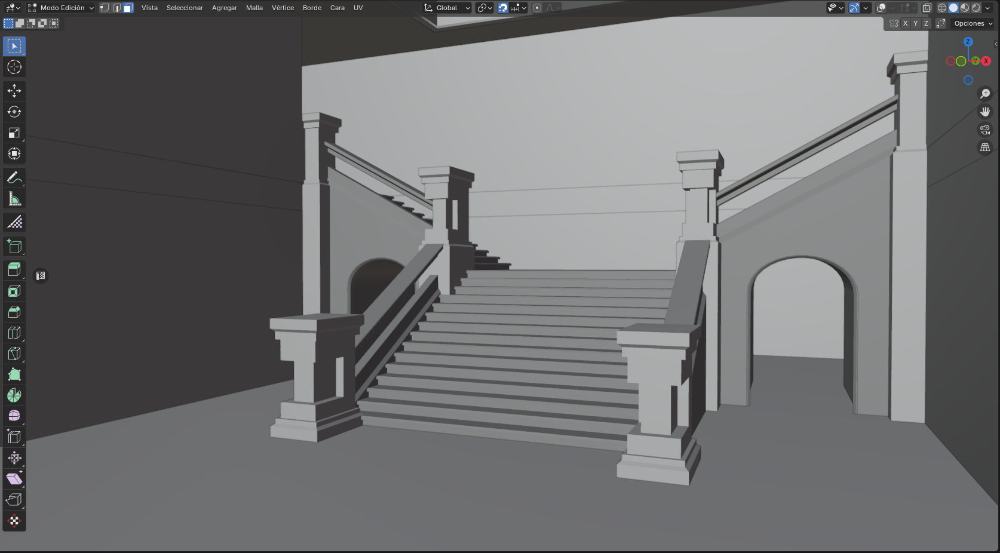
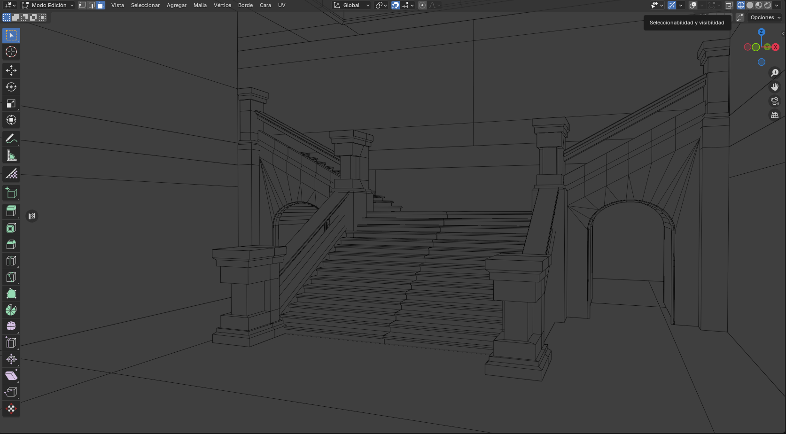
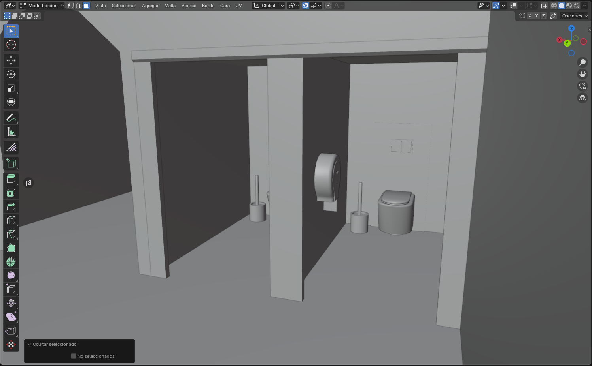
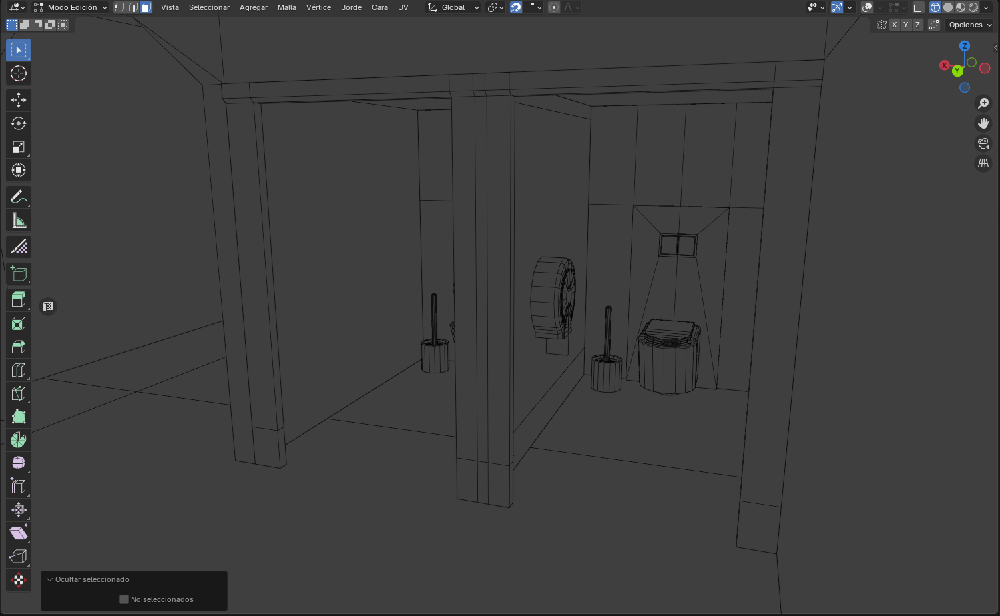
museum-
museum- with exterior and interior from my party game project. It features separate floors and reusable UVs for atlas textures.
museum- triangle count: 67.986
museum- rooftop triangle count: 7.899
museum- upper floor triangle count: 11.418
museum- ground floor triangle count: 39.783
museum- basement triangle count: 8.886
Blender
Substance Painter
Unity